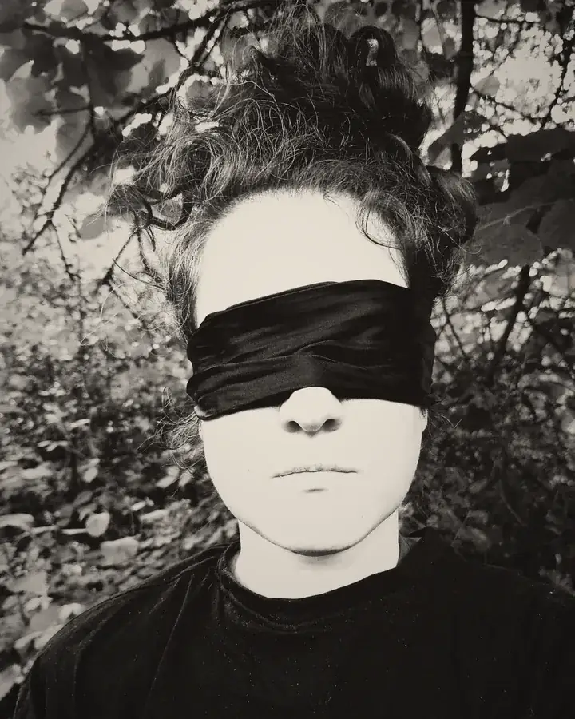
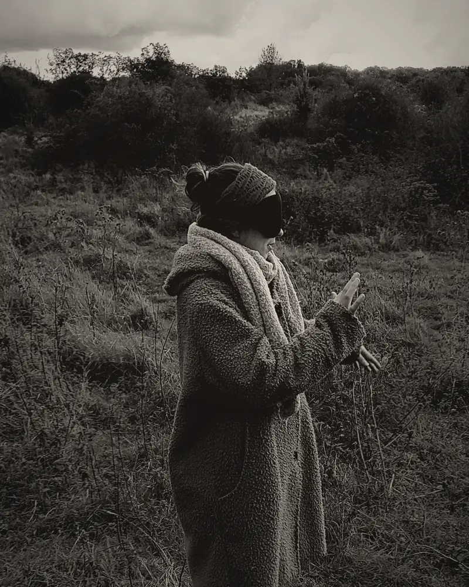
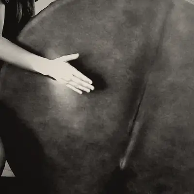
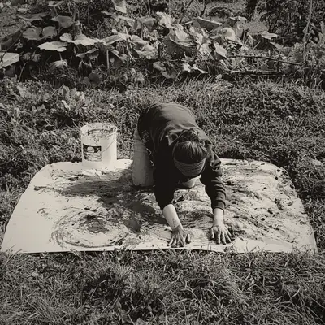
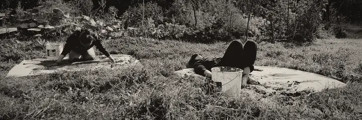

Experiment 01 · zonder zicht
Wat gebeurt er als ik je het zicht ontneem?
Erika Wild neemt je mee in de ervaring. Geblinddoekt, in de natuur: je wandelt, je danst, je luistert. Alleen of in groep.
Je ogen nemen alle plaats in
Alles gaat via je ogen. De hele dag.
Ik neem je het zicht af. De rest wordt wakker: de grond onder je voeten, de wind op je huid, de stem van de ander, je adem.
Erika Wild organiseert zintuiglijke experimenten met een blinddoek, in de natuur, met dans, muziek en ritme. Individuele sessie: € 75 (1 uur). Groepssessie: € 35 per persoon (2 uur).
Geen programma. Een experiment.
Eén vraag tegelijk. We beleven ze samen, tot het einde. Dan volgt het volgende experiment.
Experiment 01
Zonder zicht
Ik neem weg wat overheerst: je blik. Wat kan er dan ontstaan?
- Wandelen in de natuur
Geblinddoekt en begeleid. Het terrein, de geuren, de geluiden.
- Dansen
Zonder spiegel, zonder blik. Wat je lijf wil.
- Muziek en ritme
Luisteren, slaan, zingen. Het ritme verbindt de groep.
- Expressie en impressie
Wat binnenkomt via je zintuigen, komt eruit via gebaar, stem, lijn.



Wat het wakker maakt
- Je lijf — het neemt het woord terug.
- Je innerlijke stem — onder het lawaai van de beelden.
- De band — met de natuur, met de anderen, zonder filter.
Minder kijken. Meer voelen.

Hoe het verloopt
- Geen ervaring in dans of muziek nodig.
- Je kunt de blinddoek op elk moment afdoen.
- Ik begeleid je. Je staat nooit alleen in het donker.
- Je kiest zelf je moment in de online agenda.